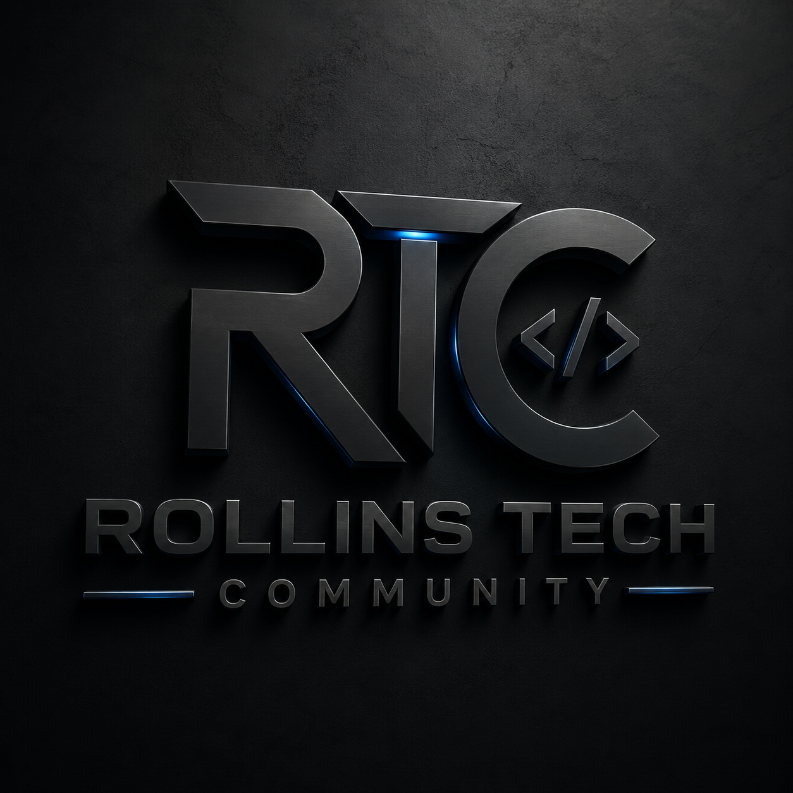

I go by the name ROLLINS JOHN OMONDI, a student at Kisii university taking Bachelor of science in Information Technology. I come from Kisumu county, Nyakach sub ounty. I’m a detailed doer, creative problem solver, malleable learner, data-driven decision maker, a leader, a relentless advocate, a team player and a curious investigator. I willingly work for long hours to ensure the success of scopes. As a programmer, I am very patient when handling situations to ensure the decisions made have clear justification. I also acknowledge that I can get better through constructive criticism upon where I have failed or missed. I fear God and believe in integrity above everything else.
After completing my studies in Information Technology, I aspire to provide professional technology solutions, including software and web development, computer and mobile device repair, network installation and management, cybersecurity, database administration, IT consultancy, system maintenance, and technical support. My goal is to use the knowledge and skills acquired during my studies to solve real-world technological challenges, support businesses, and contribute to digital transformation.
Click hear for personal Experience